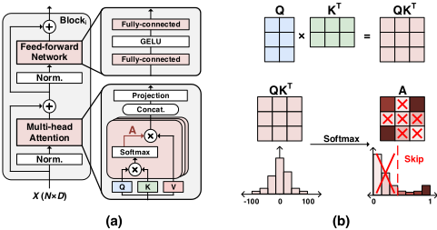
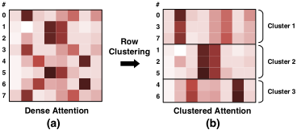
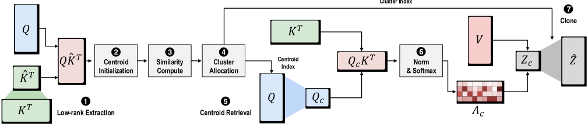
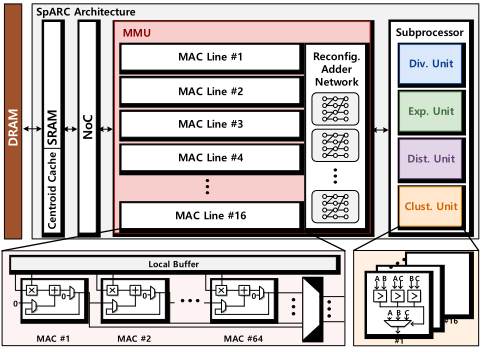
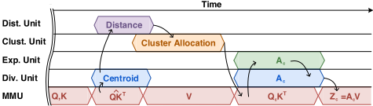
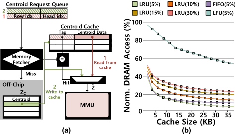
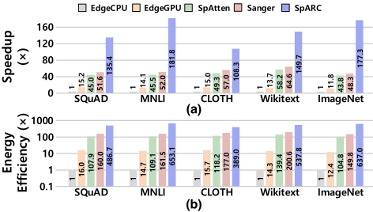

SpARC：基于行聚类的 Token 相似度感知稀疏注意力 Transformer 加速器
论文针对 Transformer 自注意力 O(N²D) 计算量随序列长度平方增长、元素级稀疏注意力又因动态非结构化稀疏导致硬件利用率低的问题，提出行聚类近似注意力算法与配套加速器 SpARC。算法上先对 K^T 做低秩抽取（LDA 离线选列）得到低秩 QK^T，用 L1 距离将注意力图按行聚类，每簇仅以质心行计算一次注意力分数再克隆回原维度，并以 KL 散度阈值自适应确定各 transformer block 的簇数。硬件上实现 28nm 下 3.83mm²、500MHz 的全流水 RTL 加速器，含 16 向量处理器 MMU、专用距离/聚类单元与 32KB LRU 质心 cache，以 row-stationary 数据流隐藏聚类开销。实验显示注意力图密度约 15% 时精度损失可忽略、FLOPs 降低约 82%，核心注意力相对 EdgeCPU/EdgeGPU/SpAtten/Sanger 平均加速 147.8×/10.6×/3.1×/2.7×。该工作属 AI 加速器的算法-硬件协同设计，与团队内存/互连 IP 技术栈无直接交集。
Transformer 自注意力计算复杂度为 O(N²D)，随输入序列长度平方增长（如 GPT-2 序列长度从 1K 扩到 16K，自注意力计算量从 38.7 GFLOPs 暴涨到 9477.3 GFLOPs），成为部署瓶颈；现有元素级稀疏注意力产生动态、高度非结构化的稀疏模式，带来负载不均衡、复杂互连与运行时调度开销，硬件利用率低。
提出行聚类近似注意力：先对 K^T 做低秩抽取（抽取列由 LDA 离线确定，取 15% 列）得到低秩 QK^T，使聚类在稠密注意力计算之前完成；用 L1 距离计算各行与 C 个初始质心的相似度并完成簇分配，每簇仅以代表行（质心）计算 Q_cK^T、Softmax 与 A_cV，再将结果克隆扩展回 N×D；以 KL 散度比较聚类前后注意力图，按全局误差阈值自适应确定每个 transformer block 的簇数（如 GPT-2 阈值 0.005 时 block 1 为 218 簇、block 7 为 43 簇）。硬件上实现全流水 SpARC 加速器：含 16 个向量处理器（每周期 64 MAC）的 MMU 与可重构加法网络、单除数倒数除法单元、Taylor 级数指数单元、绝对距离单元与 48 比较器聚类单元，采用 row-stationary 数据流并行无数据依赖的计算；另设 32KB、LRU 替换的质心 cache，避免簇克隆导致的碎片化主存访问。
注意力图稀疏度达 85-90%（密度约 15%），在 BERT-Base（SQuAD v1.1、MNLI、CLOTH）、GPT-2（Wikitext-2）、ViT（ImageNet1K）上精度损失可忽略
约 15% 注意力图密度对应相对稠密 baseline 的 FLOPs 降低约 82%
28nm CMOS 综合结果：面积 3.83mm²，功耗 1.252W，频率 500MHz，峰值能效 408.95 GOPs/W
核心注意力平均加速比：相对 EdgeCPU 147.8×、EdgeGPU 10.6×、SpAtten 3.1×、Sanger 2.7×
端到端能效提升：相对 EdgeCPU 531.4×、EdgeGPU 36.5×、SpAtten 4.6×、Sanger 3.1×
32KB 质心 cache（LRU 替换）将主存访问降至约 20%
区别于 SpAtten、Sanger 等基于元素级非结构化稀疏、需跳零计算与复杂运行时调度的工作，SpARC 利用注意力图的行间相似性做行级结构化稀疏，每簇只计算一次注意力分数，从算法层面规避动态稀疏带来的负载不均衡、复杂互连与 load balancing 开销；并通过低秩抽取把聚类提前到稠密注意力计算之前，配合专用流水线与质心 cache 将聚类开销压到矩阵乘关键路径之外。
相关度级别：low
命中能力域：无明显对应
理由：论文核心是 Transformer 稀疏注意力的算法-硬件协同设计与 AI 加速器微架构（MAC 阵列、聚类单元、质心 cache、row-stationary 数据流），不属于团队 2.1~2.7 任何能力域的核心技术或代表工程场景：既非内存/互连 IP 的架构、RTL、时序/物理实现，也不涉及 UVM/覆盖率、formal、仿真加速/Emulation 或验证自动化等验证方法学；其 RTL 综合（Design Compiler）与功耗评估（PrimeTime PX）只是标准评估流程，未提供可借鉴的时序收敛、低功耗或 RTL quality 方法学。对以 LPDDR/HBM/UCIe IP 为主业的团队而言，仅具一般性行业背景价值。
建议动作：仅了解结论
Han Cho、Dongjun Kim、Seung-Eon Hwang、Jongsun Park
韩国高丽大学电气工程学院，首尔，韩国
{myeyeget,djkim010592,eonion56,jongsun}@korea.ac.kr
自注意力机制是 Transformer 卓越性能的关键使能因素，占据了 Transformer 整体计算量的很大一部分。尽管自注意力机制十分有效，但其本身固有地存在大量冗余，这使得稀疏注意力成为一种颇具吸引力的方法。本文提出 SpARC——一种稀疏注意力 Transformer 加速器，它通过降低自注意力机制的计算复杂度来提升吞吐量与能效。我们的方法利用 Transformer 注意力图中固有的行级冗余来减少整体自注意力计算。通过采用按行聚类，每个聚类仅需计算一次注意力分数，从而在不严重损害精度的情况下实现近似注意力。为了充分发挥所提出的聚类近似注意力的高并行性，我们开发了一个配备专用存储器层次结构的全流水线加速器。实验结果表明，SpARC 可实现 85-90% 的注意力图稀疏度，而精度损失可忽略不计。与先前的稀疏注意力 Transformer 加速器相比，SpARC 实现了高达 4× 的核心注意力加速和 6× 的能效提升。
Transformer [1] 以其自注意力机制而闻名，擅长捕捉序列或图像中的全局与局部上下文。事实证明，它在从自然语言处理（NLP）[2], [3], [4] 到计算机视觉（CV）任务等广泛的应用领域中都非常有效。自注意力机制作为 Transformer 的核心计算，计算整个输入序列中各 token 之间的关系，以确定各个输入 token 的重要性。这种关系计算特性推动输入序列长度不断增加，以提升 Transformer 的性能（例如，BERT：512 长度 [2]，GPT-3：2048 长度 [4]）。然而，增加输入序列长度带来了一个根本性挑战。虽然更长的输入序列可能提升性能，但自注意力计算的计算复杂度和存储器开销会随输入序列长度的增加而呈二次方增长。例如，当将 GPT-2 [3] 的序列长度从 1K 扩展到 16K 时，自注意力所需的计算量从 38.7 GFLOPs 飙升至 9477.3 GFLOPs，使自注意力机制成为 Transformer 部署中的主要
允许在免费的前提下制作本作品部分或全部内容的数字或纸质副本用于个人或课堂用途，前提是此类副本的制作或分发不用于营利或商业利益，且副本首页须带有本声明及完整的引用信息。本作品中第三方组件的版权必须予以尊重。对于所有其他用途，请联系所有者/作者。
© 2024 版权归所有者/作者所有。
ACM ISBN 979-8-4007-0601-1/24/06.
瓶颈。这种低效凸显了降低自注意力复杂度对于实现可扩展 Transformer 的重要性。
为了解决自注意力固有的计算复杂度和存储器占用问题，稀疏注意力已成为一种有前景的方法 [6], [7]。稀疏注意力旨在通过选择性地跳过相关性较低的 token 对的计算来减轻稠密注意力的计算负担，从而有效消除整个自注意力过程中的潜在冗余。这种选择性计算通过降低总体计算开销来提升可扩展性，使得能够处理更长的输入序列而不会产生过高的资源需求。然而，稀疏注意力的这种选择性计算所面临的挑战之一是引入了动态且高度非结构化的稀疏模式 [8], [9]。由于负载不均衡以及需要动态运行时调度，这种动态稀疏模式给高效的硬件利用带来了困难。
为了解决先前稀疏注意力方法所带来的硬件性能下降问题，本文提出了 SpARC，这是一种新颖的软硬件协同设计框架，通过按行结构化稀疏注意力来加速注意力计算，提供了一种使 Transformer 加速更加实用且可扩展的解决方案。我们的主要贡献可以总结如下：

图1(a)展示了Transformer架构及其主要组成模块。首先，大小为 𝑁 的输入序列由一个编码层处理，该层将序列转换为输入矩阵 𝑋 ∈ R 𝑁 × 𝐷 。然后，该输入矩阵 𝑋 被送入多个Transformer编码器块。每个块由两个主要组件构成：多头自注意力和前馈网络（ 𝐹𝐹𝑁 ）。多头自注意力，或简称自注意力，接收输入 𝑋 并执行三种不同的线性变换，以生成查询（ 𝑄 ）、键（ 𝐾 ）和值（ 𝑉 ）矩阵，每个矩阵的维度均为 R 𝑁 × 𝐷 ，如下所示：
如式1所示，在生成 𝑄 、 𝐾 和 𝑉 之后，这些矩阵沿隐藏维度 𝐷 被切分为 𝐷 ℎ ，从而形成多个头。对于每个头，注意力图 𝐴 表示为
然后，每个头的注意力矩阵 𝐴 与其对应的 𝑉 相乘，得到 𝑍 = 𝐴𝑉 。随后，该 𝑍 矩阵被拼接、线性投影，并经过一个残差连接后进入 𝐹𝐹𝑁 。在 𝐹𝐹𝑁 内部，输入矩阵 𝑍 经过一系列变换，包括一个全连接层、一个GELU激活函数、另一个全连接层以及一个残差连接。该过程在整体Transformer架构中的每个Transformer块内重复进行。
Transformer中的自注意力机制因其计算复杂度随输入序列长度呈二次方增长，成为其部署过程中的重大瓶颈。具体而言，当 𝑁 为输入序列长度、𝐷 为隐藏维度时，自注意力模块中对 𝑄𝐾 𝑇 进行矩阵乘法、缩放以及Softmax运算的计算复杂度为 𝑂 ( 𝑁 2 𝐷 )。相比之下，式1中其余的矩阵乘法 𝑍 = 𝐴𝑉 以及 𝐹𝐹𝑁 所涉及的计算量为 𝑂 ( 𝑁𝐷 2 )。考虑到Transformer中输入序列长度不断增长的趋势，这一 𝑂 ( 𝑁 2 𝐷 ) 的复杂度使得开发高效的注意力计算技术成为必然需求。

为减轻自注意力带来的计算负担，稀疏注意力提供了一种颇具前景的解决方案。虽然注意力机制旨在捕捉输入序列中token之间的关系，但并非所有token之间都表现出强关系。例如，像冠词'a'或'the'这样的token可能对序列处理没有显著影响，并且可能在式2的Softmax函数中产生接近零的输出。如图1 (b)所示，先前的工作 [6]、[7] 利用这一观察结果，通过省略对逐元素稀疏注意力图中接近零值的计算来降低计算复杂度。然而，由于稀疏模式在运行时具有动态特性，这种逐元素稀疏性给高效的硬件利用带来了挑战。为了充分发挥稀疏注意力的计算优势，迫切需要一种硬件友好的结构化稀疏注意力机制。
在本节中，我们介绍一种基于注意力图行级相似性的行聚类近似注意力方法，旨在降低自注意力的计算复杂度。
Attention Map Row-wise Redundancy : The self-attention mechanism, a key component of transformer architectures, is computationally expensive due to its inherent redundancies [7], [10]. Addressing these redundancies is a promising approach to improving the efficiency of transformers. As discussed in Section 2.2, unstructured element-wise sparsity eliminates element-wise redundancy and achieves high sparsity levels. However, it incurs significant hardware overhead due to the dynamic nature of sparsity, requiring complex interconnects, non-zero matching, and load balancing mechanisms [11]. The hardware overheads associated with element-wise sparsity motivate the exploration of a coarser-grained approach to sparsity, namely row-wise clustering.
Fig. 2 (a) shows an example of a dense attention map that appears to be random, not exhibiting any specific patterns. However, upon analyzing individual rows, we can identify patterns of similarity between them. For example, in Fig. 2 (a), it is evident that the dense attention map rows of {0,3,7}, {1,2,5}, and {4,6} show similar patterns. These similar row patterns motivate row-clustering, where the rows with similar patterns are grouped together, as illustrated in Fig. 2 (b). Our core idea is to approximate the entire attention map by calculating attention scores only once per representative cluster row (i.e., centroid) instead of row by row. This approach
SpARC: Token Similarity-Aware Sparse Attention Transformer Accelerator via Row-wise Clustering

stems from the definition of a centroid: the data point within a cluster that exhibits the highest degree of similarity to all other data. Our approximate self-attention mechanism significantly reduces computational complexity in attention computation with minor accuracy degradation. Furthermore, this row-wise clustering-based approach offers flexibility in balancing computational reduction with performance by adjusting the number of clusters.
图3展示了所提出的行聚类近似注意力的整体流程。在图2所示的示例中，行聚类是在稠密注意力计算完成之后进行的。然而，这并不能减少稠密注意力的二次方计算量。为了降低 𝑂 ( 𝑁 2 𝐷 ) 的稠密注意力计算量，行聚类应在稠密注意力图 𝐴 之前执行。因此，我们首先介绍通过对 𝑄𝐾 𝑇 进行低秩提取来近似稠密注意力矩阵 𝐴 的方法，以便进行后续的行聚类。
低秩提取：图3中的1展示了低秩提取过程。给定 𝑄, 𝐾 ∈ R 𝑁 × 𝐷 ℎ（图3最左侧），对 𝐾 𝑇 进行低秩提取，以获得更小的矩阵 ˆ 𝐾 𝑇 。随后，将低秩的 ˆ 𝐾 𝑇 与 𝑄 相乘，得到低秩近似 ˆ 𝑄𝐾 𝑇 ∈ R 𝑁 × 𝑁 𝑙𝑜𝑤 。具体提取哪些列是通过线性判别分析（LDA）离线确定的。
质心初始化：在计算 ˆ 𝑄𝐾 𝑇 之后，为便于后续的行相似度计算，首先计算 𝐶 个初始质心 [12]。如图3中的2所示，𝐶 个质心在空间中均匀初始化，用于 ˆ 𝑄𝐾 𝑇 各行的相似度计算。初始质心矩阵 𝐶𝑒𝑛𝑡𝑟𝑜𝑖𝑑 ∈ R 𝐶 × 𝑁 𝑙𝑜𝑤 定义如下：
其中 𝐴 𝑐 表示计算质心 𝑐 所需的行集合。该初始化的质心矩阵随后会被更新。
相似度计算：质心初始化完成后，在 ˆ 𝑄𝐾 𝑇 的每一行与 𝐶𝑒𝑛𝑡𝑟𝑜𝑖𝑑 中的质心之间计算两两L1距离（图3中的3）。先前计算得到的初始质心使得只需将每一行与有限的质心进行比较，即可实现低成本的相似度计算。选择L1距离作为相似度度量是因为其计算开销低，可避免计算代价高昂的乘法运算。由此得到的相似度矩阵 𝑆𝑖𝑚 ∈ R 𝑁 × 𝐶 定义如下：
簇分配：在计算出两两距离矩阵 𝑆𝑖𝑚 之后，利用该矩阵将注意力图的每一行分配到其对应的簇（图3中的4）。行 𝑖 的簇编号定义如下：
在每一行分配到其对应簇的操作完成后，按列遍历相似度矩阵，以确定最能代表每个簇质心的行。随后，从 𝑄 中取出所获得的行索引——即簇内与其他行相似度最高的行——得到 𝑄 𝑐 ∈ R 𝐶 × 𝐷 ℎ（图3中的5）。该 𝑄 𝑐 用于执行轻量级的注意力计算，包括 𝑄 𝑐 𝐾 𝑇 、归一化、6处的Softmax以及 𝑍 𝑐 = 𝐴 𝑐 𝑉 ，从而显著降低整体计算复杂度。
Clone：在完成直至 𝑍 𝑐 = 𝐴 𝑐 𝑉 的全部计算后，将所得矩阵 𝑍 𝑐 ∈ R 𝐶 × 𝐷 ℎ 拼接并扩展回其原始维度（图 3 中的 7），即 R 𝑁 × 𝐷 的矩阵尺寸，以便执行线性投影及后续的前馈网络。近似 ˆ 𝑍 扩展的生成过程是将属于某一特定聚类的所有行替换为相应的聚类质心。
要在精度与计算量削减之间取得平衡，需要仔细考虑用于近似注意力计算的聚类数量。尽管更多的聚类数量以及为每个 Transformer 块设置不同的聚类数量能够降低近似误差，但注意力计算的复杂度削减幅度会随之减小。为了有效选择聚类数量，我们在精度与计算复杂度之间进行权衡，预先确定每个 Transformer 块的聚类数量。为了衡量聚类所引入的误差，我们采用 Kullback-Leibler（KL）散度作为指导性度量，对聚类前后的注意力图进行比较。我们将原始注意力矩阵 𝐴 与克隆后的聚类注意力矩阵 ˆ 𝐴 之间的误差考虑如下：

借助该度量，我们可以评估聚类性能与聚类数量之间的关系。通过为每个 Transformer 块设定全局误差阈值 𝑡，我们可以确定满足指定误差阈值（即 𝑒𝑟𝑟𝑜𝑟 ≤ 𝑡）的最小聚类数量。这种全局阈值设定方法允许聚类数量在不同 Transformer 块之间变化。例如，对 GPT-2 采用 0.005 的阈值，会使块 1 的聚类数量为 218、块 7 的聚类数量为 43，从而适应各 Transformer 块的不同敏感度。因此，我们的行聚类近似注意力在性能与聚类数量（注意力行稀疏度）之间实现了平衡。
如前所述，由于计算复杂度呈二次方增长，输入序列长度的不断增加已成为 Transformer 部署中的主要瓶颈。所提出的行聚类近似注意力通过在 𝑂(𝑁²𝐷) 的计算复杂度中将序列长度（𝑁）缩减为表示聚类数量（𝐶）的较小参数，有效解决了注意力计算的瓶颈。尽管该方法显著降低了自注意力机制的计算复杂度，但包括中央处理器（CPU）和图形处理器（GPU）在内的现有通用计算平台并不适合加速所提出的聚类近似注意力。这一局限源于两个主要因素。首先，通用计算平台并未针对行聚类近似注意力所涉及的具体运算进行优化，例如绝对距离和最小距离定位器的计算。这些运算是聚类过程的基础，其在通用平台上的低效执行会阻碍整体性能。其次，通用计算平台难以针对所提出的行聚类近似注意力算法有效地利用数据并行性。聚类过程中固有的数据依赖性限制了在多个处理单元之间并行化计算的能力，从而限制了这些平台所能获得的性能提升。为了克服通用计算平台的这些局限并充分发挥所提出的行聚类近似注意力的潜力，我们提出了一种专用加速器，将在下一节中予以介绍。

In this section, we present SpARC, a dedicated accelerator specifically designed for row-clustering based approximate attention. To handle the unique computational requirements of the approximate attention, SpARC is equipped with a central compute core comprising a matrix multiply unit (MMU) and multiple sub-processors. Fig. 4 shows the overall SpARC hardware architecture. The MMU consists of 16 independent vector processors and a reconfigurable adder network to accommodate different partial sum accumulation requirements arising from diverse dataflows. Each vector processor features a MAC line capable of performing 64 MAC operations in a single cycle and a dedicated local buffer to store operands and partial sums. The divider unit employs a reciprocal-based singledivisor approach. Since all divisions in transformers fall under the single-divisor category (scaling, Softmax, normalization), a single reciprocal generator is employed for efficient calculation, distributing the result to 64 different multipliers. The exponent unit can perform 64 parallel exponent calculations based on Taylor-series approximation of the exponent function. The absolute distance unit can process up to 64 different outputs simultaneously, and the clustering unit , equipped with 48 comparators, can process up to 16 parallel 3-input comparisons within a single cycle. This customized architecture efficiently exploits data parallelism, enabling significant performance improvements for row-clustering based attention computations.
In SpARC, data dependencies inherent in the computational flow should be carefully considered to execute the row-clustering approximate attention of Section 3 efficiently. As illustrated in Fig. 3, the centroid initialization, similarity computation, and cluster allocation appear to be performed sequentially. However, many row-wise computations are independent of each other, allowing for parallel processing of rows. This means that once a row of ˆ 𝑄𝐾 𝑇 is processed, it can be forwarded to the centroid initialization step while the remaining rows of ˆ 𝑄𝐾 𝑇 are still being calculated. Exploiting this row-wise data independence for increased throughput, the SpARC architecture employs a row-stationary dataflow, enabling parallel processing across different computational stages.
Fig. 5 illustrates the computation pipeline of the SpARC architecture. In the initial stage, the MMU computes the full matrices of 𝑄
SpARC: Token Similarity-Aware Sparse Attention Transformer Accelerator via Row-wise Clustering

and 𝐾 . Once the 𝑄 and 𝐾 matrices are obtained, the MMU proceeds with the row-wise computation of ˆ 𝑄𝐾 𝑇 . As each row of ˆ 𝑄𝐾 𝑇 is computed, it is forwarded to the adder network and divider units for interpolated centroid initialization. Similarly, each computed centroid is then passed to the divider unit and absolute distance unit for normalization and L1 distance computation.
Upon completing each row of the similarity matrix, the index searcher within the clustering unit begins traversing the matrix to allocate each row of ˆ 𝑄𝐾 𝑇 to a cluster and update the corresponding centroid. While the L1 distance and cluster allocation are being computed, the MMU concurrently calculates the 𝑉 matrix, ensuring high throughput by eliminating MMU idle time. Once the generation of 𝑉 and cluster allocation is complete, the corresponding rows of each centroid are gathered to perform the low-cost 𝑄 𝑐 𝐾 𝑇 , followed by Softmax, 𝑍 𝑐 = 𝐴 𝑐 𝑉 , and linear projection computations.
By parallelizing various computations without data dependencies on distinct specialized sub-processors, we effectively minimize the overhead associated with the clustering process, thereby establishing matrix multiplication as the critical path within the self-attention mechanism.
在完成 𝑍 𝑐 = 𝐴 𝑐 𝑉 计算以及多头自注意力拼接之后，计算得到的 R 𝐶 × 𝐷 质心结果应被变换回 R 𝑁 × 𝐷 的原始输入维度，以便进行后续计算，包括线性投影和前馈网络。该过程包括将每个簇中的行替换为其对应的质心，如第 3.2 节 Cloning 中先前所述。尽管所提出的算法和硬件架构显著提升了能效与速度，但聚类过程的动态特性以及行向簇的不规则分配，会因不可预测的访问模式而引入主存开销。每次请求时都从主存加载质心会导致碎片化而非连续的内存访问，从而造成过多的数据搬移、内存带宽利用率下降以及内存访问能耗增加。
为缓解这一问题，我们提出引入一个称为质心缓存（centroid cache）的额外存储层次。如图 6 (a) 所示，并非在主存中显式地克隆并存储质心，而是当计算需要某个质心时，将请求发送至内存取数器（memory fetcher）。取数器检查缓存以确定所请求的质心是否存在。若发生缓存命中（请求 1），取数器从缓存中取出该质心，从而无需访问主存。若发生缓存缺失（请求 2），取数器则从主存加载该质心，并将其存入质心缓存以备后续使用。
| Density | F1 Score | Exact Match | |
|---|---|---|---|
| SQuAD v1.1 BERT-Base Baseline Sanger | 100% 17.30% 15.88% | 87.34% 86.59% 87.01% | 79.78% 78.59% |
| 79.39% | |||
| Ours | 29.89% | 87.28% | 79.52% |
| Matched Acc. | Matched Acc. | ||
| Density | |||
| MNLI Baseline | 100% | 83.91% | 83.91% |
| BERT-Base Sanger | 18.81% | 83.52% | |
| 15.90% | 83.55% | 83.55% | |
| Ours | 28.11% | 83.62% | 83.62% |
| Density | Acc. | Acc. | |
| CLOTH Baseline | 100% | 79.34% | 79.34% |
| BERT-Base Sanger | 18.30% | 78.90% 78.94% | 78.90% 78.94% |
| Ours | 16.84% | 79.19% | 79.19% |
| 29.89% | |||
| Density | Perplexity | Perplexity | |
| Wikitext-2 Baseline | 100% | 21.3 | 21.3 |
| GPT-2 Sanger | 16.27% | 21.52 21.5 | 21.52 21.5 |
| Ours | 16.37% 29.28% | 21.34 | 21.34 |
| Density | Acc. | Acc. | |
| ImageNet-1K Baseline | 100% | 84.40% | 84.40% |
| ViT-Base Sanger | - | - | - |
| Ours | 15.15% | 83.61% | 83.61% |
| 26.42% | 84.28% | 84.28% |
| | Density | F1 Score | Exact Match |
图 6 (b) 展示了在不同注意力图密度和替换策略下，主存访问位数随缓存容量的减少情况。数据显示内存访问的减少存在一个饱和点，据此我们选择了 32KB 的质心缓存容量。此外，考虑到所需质心的数据访问模式局部性，我们采用最近最少使用（LRU）替换策略，而非最不经常使用（LFU）或先进先出（FIFO）策略，以进一步优化内存访问。这一额外的存储层次有效地将主存访问降低至约 20%。
为验证所提出的行聚类近似注意力的有效性，我们在三个不同的 Transformer 模型上、针对五个不同的任务对其进行评估：SQuAD v1.1、MNLI 和 CLOTH 任务上的 BERT-Base [2]，Wikitext-2 任务上的 GPT-2 [3]，以及 ImageNet1K 任务上的 ViT [5]。在误差剖析和低秩提取中，使用了训练数据集中的 1K 个随机样本，并在应用所提出算法后对每个 Transformer 模型进行了微调。在低秩提取过程中，提取了 𝐾 中 15% 的列。
所提出的 SpARC 架构以寄存器传输级（RTL）实现，并使用 Synopsis Design Compiler 在 28nm CMOS 工艺下进行综合。功耗和能耗通过 PrimeTime PX 获得。加速比通过自主开发的周期精确仿真器获得，该仿真器以 HBM2 作为主存 [13]。为证明 SpARC 的有效性，我们将其与两个通用计算平台（EdgeCPU 和 EdgeGPU）以及两个最先进（SOTA）的稀疏 Transformer 加速器 SpAtten [14] 和 Sanger [15] 进行比较。EdgeCPU 和 EdgeGPU 均来自 NVIDIA Jetson Nano。为进行公平比较，SpARC、SpAtten 和 Sanger 均在 15% 的注意力图密度下进行评估。
| Module | Parameter | Area ( 𝑚𝑚 2 ) | Power ( 𝑚𝑊 ) |
|---|---|---|---|
| Core | 64 × 16 INT16 | 1.676 | 322.39 |
| Memory, NoC | 1MB (32KB cache) | 1.556 | 697.60 |
| Exp. Unit | 64 Exp. | 0.081 | 19.56 |
| Div. Unit | 1 / 𝑛 based 64 INT32 | 0.232 | 98.18 |
| Clust. Unit | 48 Comparator | 0.272 | 108.97 |
| Dist. Unit | 64 INT32 | 0.014 | 5.62 |
| Total | Total | 3.83 𝑚𝑚 2 | 1.252W |
| Operating Freq. | Operating Freq. | 500MHz | 500MHz |
| Module | Parameter | Area ( 𝑚𝑚 2 ) | Power ( 𝑚𝑊 ) |
表1展示了每个任务的实验结果。我们将我们的方法与最先进的稀疏 Transformer 加速器 Sanger [15] 进行比较。对于 BERT 和 GPT-2，我们在所有五个任务上均实现了约 15% 的注意力图密度，且精度损失可忽略不计。值得注意的是，我们的工作在 SQuAD、CLOTH 和 Wikitext-2 上优于 Sanger，而在 MNLI 上性能略低。这种差异可能是由于 MNLI 的最大序列长度明显更小，与 Sanger 高度非结构化的稀疏图更为契合。
在 FLOPs 缩减和聚类数量方面，与稠密基线相比，我们提出的方法显著降低了计算复杂度。注意力图密度约为 15% 时的聚类数量对应约 82% 的 FLOPs 缩减，表明低秩近似过程的计算开销很小。FLOPs 的这一缩减直接带来了加速收益，使 Transformer 处理更快、更加节能。
表 2 展示了 SpARC 的综合结果。SpARC 的面积为 3.83 𝑚𝑚 2，功耗为 1.252W，工作频率为 500MHz，实现了 408.95 GOPs/W 的峰值能效。图 7 (a) 展示了 SpARC 相对于各种硬件基线的核心注意力加速比。在所有不同的基准测试上，SpARC 始终优于所有其他基线硬件。平均而言，SpARC 相对于 EdgeCPU、EdgeGPU、SpAtten 和 Sanger 分别实现了 147.8 ×、10.6 ×、3.1 × 和 2.7 × 的加速。从图 7 (b) 的能效来看，SpARC 相对于 EdgeCPU、EdgeGPU、SpAtten 和 Sanger 分别实现了 531.4 ×、36.5 ×、4.6 × 和 3.1 × 的端到端能效提升。
在本文中，我们提出了 SpARC，一种新型稀疏 Transformer 加速器，它采用基于行聚类的近似注意力机制和数据无关的并行处理，从而实现了显著的性能提升。通过有效降低自注意力的计算复杂度和存储器访问次数，SpARC 在保持精度的同时实现了 Transformer 的高效执行。实验结果表明，在各种任务和 Transformer 模型上，SpARC 的性能均超越了最先进的稀疏 Transformer 加速器。

本研究得到韩国政府资助的韩国国家研究基金会（NRF）资助（编号：NRF2022M3I7A2 079267）；部分得到韩国政府（科学技术信息通信部，MSIT）资助的信息与通信技术规划评估院（IITP）资助（编号：2022-0-00266，“超低功耗低位精度混合模式 SRAM PIM 开发”）；部分得到三星电子三星研究资助与孵化中心的资助（资助号：SRFCMA1802-01）。EDA 工具由韩国集成电路设计教育中心（IDEC）提供支持。